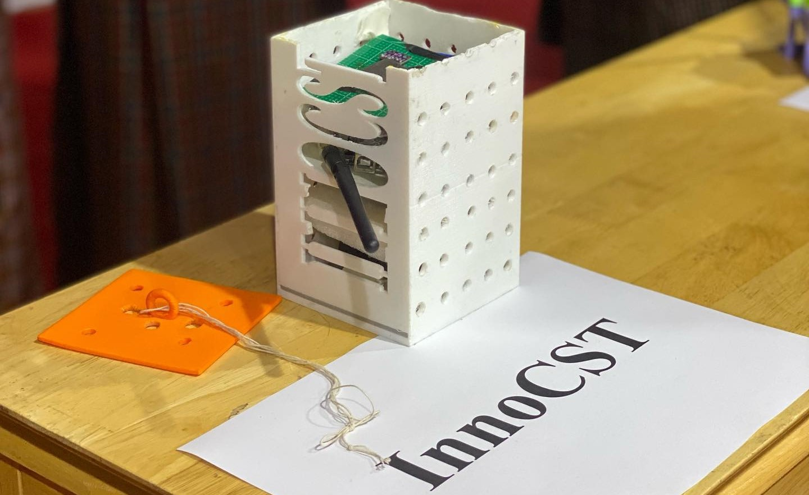

Following are some of the projects I have done.
Animal Intrusion Detection System
Aim: This project was done to reduce the human widlife conflict.
Hardwares: RPI 4, GSM sim900A, Relay, Arducam 1080 night vision.
Softwares: Raspian OS, YOLO, Express, React Native, Python, JavaScript
Teammates: Tandin Phuntsho, Karsel Dawa, Pema Lhaden Wangchuk, Yeshi Tshomo
My Role: Assitant Leader, IOT development, YOLO model training and implementation and Backend Developer.
ThruelKham
Aim: This project was done collect health data from the body.
Hardwares: MAX30102, MPU 6050, ESP32, strap.
Softwares: Arduino IDE, Android Studio
Teammates: Tandin Phuntsho, Tenzin Kuenkhyab, Pema Lhamo, Pelden Zangmo
My Role: Leader, Code debugging and testing, Mobile Application Developer.

INNOCST-cansat
Aim: This project was done to promote and celebrate National Space Week by developing a lighweight, cheap and easy cansat.
Hardwares: Arduino UNO R3, 9v Battery, Micro SD, GPS- Neo-6M, BMP280, ESP-32 cam, NRF240l01+Pa+Lna, and MPU 6050.
Softwares: Arduino IDE, C++, Jupyter Notebook
Teammates: Tandin Phuntsho, Tenzin Kuenkhyab, Ugyen Lhendrup, Sonam Yuden, Yeshi Tshomo
My Role: Assistant Leader, Code debugging and testing, IOT developer.